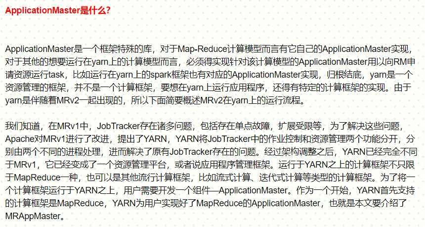

1、Yarn简介
(首先需要注意的是下面所说的应用程序(application)是指用户提交的应用程序(本文仅是指MR程序),一个应用程序可以包含多个作业(job), job之间可存在依赖关系(因为存在多job串联)。 )
(1)Hadoop的四大核心组件：
1、common 基础包 + RPC远程通信框架
2、HDFS
3、MapReduce
4、YARN === 资源调度系统 == 分布式的操作系统
hadoop集群的内部 包含了 两个集群：HDFS + YARN
HDFS ： 分布式的文件系统
YARN ： 分布式的操作系统
而且他们之间几乎没有任何关系
(2)、起源
hadoop 2.x
0.2x
1.x 第一代 mapreduce
2.x 第二代 mapreduce
hadoop-2.7.4这个版本中，必须要搭建YARN集群。编写好的MR程序才能进行提交执行
hadoop2.x以前的版本中， 之前的MR程序是怎么运行的？直接运行！
第一代的没有MapReduce和Yarn的分离,两者并没有剥离出来形成各自互不干扰的一部分
第一代MapReduce ==== 第二代MapReduce + YARN
(3)、第一代MapReduce程序的架构
第一代MapRedcue也是一个分布式的主从架构的集群
主节点守护进程：JobTracker
从节点的守护进程：TaskTracker
第一代MapReduce主要职责：
主节点：
集群的资源管理
任务调度（mapreduce ： MapTask + ReduceTask）
从节点：
提供资源
运行任务
(4)、新版本(第二代)中的YARN 集群的 分布式的主从架构的集群
主节点： ResourceManager
从节点： NodeManager
第二代中MapReduce仅仅只是提供了一个分布式编程框架的API
编写好的MapReduce运行在YARN集群之上
第一代的 Jobtracker === 第二代的 ResouceManager + ApplicationsManager(ASM)
ResourceManager : 资源管理和调度 + 响应所有客户端提交的任务执行请求
ApplicationsManager(ASM) : 管理应用程序的运行
YARN集群的管理页面中能够看到正在执行的 已经执行完毕的各种MR程序的结果
运行MapReduce的时候，集群当中会多出现两种进程角色： MRAppMaster + YARNCHILD
MRAppMaster是当前客户端提交上来的一个应用程序的主控程序, 用来管理 两个阶段(Map阶段和reduce阶段)的 所有task
当客户端提交上来一个 应用程序时， 由 resourcemanager进行接收和处理, resourcemanager会启动一个MRAppMaster程序， 用来解析和申请应用程序所需要的各种计算资源; 同时，注册该MRAppMaster到 ApplicationsManager 中！！！
要注意ApplicationMaster(AM)和ApplicationsManager(ASM)的区别,它们根本不是一个东西。MapReduce的ApplicationMaster实现是MRAppMaster。

MRAppMaster(简称MRAM或者直接称AM)：当前客户端提交上来的一个应
用程序的主控程序,用来管理两个阶段(Map阶段和reduce阶段)的所有task。
ApplicationsManager(简称ASM): 应用程序管理器。主要是管理所有的application。
yarn集群的资源管理就像是公司上下级的关系, ApplicationsManager主要管理各个应用程序的MRAppMaster, MRAppMaster管理自己这个应用程序内部需要做的事。
ResourceManager = ApplicationsManager + Scheduler
Scheduler主要是用来管理集群的nodeManager的硬件资源, 给MRAppMaster分配Container。
Container 的抽象
Docker ----- Container
Container 其实就相当于一个盒子
(5)MapReduce和yarn的关系:
yarn和mapreduce其实也是解耦的, yarn上也可以运行其他的计算框架比如spark。
Yarn概述_files/Image [1].png)
2、hadoop1.x版本和hadoop2.x版本的比较
(1) hadoop1.0
hdfs 海量数据存储的
mapreduce 海量数据计算的
mapreduce任务执行的时候 没有一个开一个专门的资源调度的平台，内置的资源调度的：
资源调度：主从
jobtracker
mapreduce计算程序 老大
1）负责mapreduce任务的资源调度 分配资源
2）启动mapreduce任务
3）监控当前的mapreduce任务的执行进度和状态
jobtracker不存在高可用的配置方案
存在单点故障
jobtracker压力很大 既要负责资源调度 又要负责应用程序的跟踪
tasktracker：
mapreduce计算程序 从节点
1）提供资源
但是tasktrcker在进行提供资源的时候,为了区分mapTask和reduceTask, 强行的将自己的资源分成两部分 一部分用于maptask, 叫mapslot; 另一部分用于reducetask, 叫reduceslot。
运行maptask任务的时候 只能使用mapslot的资源 不能使用reduceslot
这种资源提供的方式 会造成资源的严重的浪费
mapreduce V1:
资源调度存在的缺陷
1）jobtracker存在单点故障
2）jobtracker压力过大
3）资源利用不合理
4）适用面很局限 只能为mapreduce程序做资源调度,不能给其他计算引擎做资源调度。
5）扩展能力有限 不能有太多从节点
(2) hadoop2.0中 mapreduce V2做了一个优化
将资源调度过程和应用程序运行的过程分开了
资源调度过程 ---- yarn
应用程序运行 ---- 每一个应用程序 有一个自己的老大 叫 MRAppMaster
yarn：资源调度框架
不但mapreduce spark hive
(3)hadoop1.x版本产生了第一代MapReduce:
Yarn概述_files/Image [2].png)
(4)hadoop2.x版本产生了第二代MapReduce:
Yarn概述_files/Image [3].png)
Yarn概述_files/Image [4].png)
==========================================
3、yarn架构
主从架构
主节点 resourcemanager
资源调度的老大
为每一个应用程序分配资源 分配nodemanager资源
注意: resourceManager只是分配资源, 不提供资源, 比如分配哪些nodeManager给该应用程序, 而真正提供资源的则是nodeManager。
resourcemanager的组成：
(1)ASM applications manager 应用程序管理者
所有应用程序的管理者 是管理所有应用程序的 管理的每一个应用程序的老大MRAPPMaster
1)为每一个应用程序的MRAPPMaster资源分配
2）启动 每一个应用程序的 MRAPPMaster
3）监控每一个 MRAPPMaster的运行状态和进度
4）回收 MRAPPMaster资源
(2)Scheduler
调度器 决定应用程序执行顺序以及什么时候执行 Scheduler还会监测集群的资源使用情况
默认有3种资源调度方式：
1)FIFO
first in first out 先进先出
按照程序的提交顺序 执行
缺陷：
前面提交的程序有比较大的程序
后面提交的程序长时间阻塞
2)FAIR
公平调度器
所有的应用程序(application)平分资源,也就是说当前有多少作业, 就将资源平分成多少份给所有应用程序(application)使用。也就是说有应用程序(application)新进来跑, 就可以立刻获得一部分资源可以开始运行。
缺陷：
没有从每个应用程序(application)需求的资源量进行分配资源
3)CAPACITY 计算能力调度器 (默认的调动方式就是这个?)
根据每一个应用程序(application)的资源量需求 自己手动配置资源的 配置资源配比的
按照资源组划分的
比如有如下两组：
报表开发 job比较多 比较大
数据清洗 job比较少
将资源分成2个组
组1 65% 如果组内有多个job 则组内的多个jobFIFO
组2 35% 如果组内有多个job 则组内的多个jobFIFO
从节点 nodemanager
为应用程序真正提供资源的
nodemanager在进行资源提供的时候 以container为单位进行提供的
container：抽象资源容器或者逻辑资源容器(注意container是逻辑上的容器,不是物理真实存在的) 逻辑资源容器也即是在物理资源上进行范围划分
container是做资源隔离的, 封装了一定数量的 内存 io cpu 网络等资源,没有将资源真正的物理切分出来。 每个container的资源相互之间是没有重叠的,
container 是提供资源的最小单位
mapreduce程序 每一个maptask/reducetask -- 一个container
5maptask----5个container---5个yarnchild进程
3reducetask---3个container---3个yarnchild进程
记住: 1个maptask/reducetask, 对应于1个container, 对应于1个yarnchild
================================================
yarn的资源调度过程
yarn是每一个application做资源调度的
MRAPPMaster: mapreduce application master
是应用程序的老大(leader)
MRAppMaster的作用:
1）监控这个应用程序（maptask|reducetask）的运行状态和进度 失败重启
2）帮助maptask reducetask向resourcemanager申请资源
3）启动maptask reducetask
4) 资源回收
yarn的资源调度过程：
Yarn概述_files/Image [5].png)
job的提交过程:
Yarn概述_files/Image [6].png)
要点:
(1)第1步中"客户端向rm发送提交job的请求"中请求内容中包含了数据长度
(2)第2步中 job_id的命名方式是: job_时间戳_job的编号。"共享资源路径"的作用是让所有运行了task的节点共享某些资源(比如client提交job时的jar包, 就会复制到共享路径中), 共享资源路径是在hdfs上的"/tmp/hadoop-yarn/staging/hadoop/.staging/job_id"路径下, "返回共享资源路径给client"的目的就是为了让client先将这些需要共享的资源存放到该共享资源路径下, 以便接下来使用。
为什么需要共享资源?因为只有client所在的节点有所有的信息, 比如启动mapTask需要用到map()方法, 该方法自然是在提交job 的jar包里, 而其他节点启动mapTask时并不能直接访问到该jar包,所以需要将jar包共享到某个公共路径下, 供其他节点一起使用。
"共享资源"包括如下图红框的内容:
Yarn概述_files/Image [7].png)
其中,所有client提交job的jar包, 都会统一重命名为job.jar; job.split是数据的切片信息(包括切片的个数以及各切片存放的节点), 该信息主要就是为了便于计算mapTask的启动个数; job.xml是当前job相关的所有的配置信息,也就是我们写的如job.setMapperClass(WordCountMapper.class),这些信息都在这里面。
4、Yarn的作业执行流程解析(详细流程见ppt,这里是相关或无关的要点)
(1)即使mapTask执行成功,也不会马上回收其执行的Container,而是会等reduceTask全部执行完毕再回收。
也就是说会等整个MRAppMaster执行完毕后再回收container
因为一旦reduceTask执行失败且执行reduceTask的节点挂掉,那么重新找节点执行reduceTask的时候就
不用再执行mapTask了,因为mapTask的数据还在ConTainer中被保留下来。否则如果mapTask其执行的
ConTainer被回收,磁盘资源内存资源这些记录都已经被销毁,那么还需要再分配container来重新执行mapTask,
这是得不偿失的
(2)
Yarn概述_files/Image [8].png)
(3)
Yarn概述_files/Image [9].png)
(4)客户端向ResourceManager发送应用提交请求后, resourcemanager会先启动一个MRAppMaster程序， 用来解析和申请应用程序所需要的各种计算资源; 同时，注册该MRAppMaster到 ApplicationsManager 中, 然后才是将该应用程序交给Scheduler调度。
(5) rpc通信 是hadoop的内部通信机制
remote process called 远程过程调用
通过一个节点 远程调用另一个节点的方法或属性的过程
rpc通信需要满足的条件: 网络通信 反射(因为需要在自己这个节点上创建别的节点上的类的对象) NIO(一种I/O方式)
(6)
mapreduce的设计思想：
移动计算比移动数据更划算
集中式计算：
数据向计算靠近|移动
分布式计算：
计算向数据移动
数据在哪里 计算就尽量在哪里
(7)
安装集群时候,修改的配置文件有：
hadoop-env.sh 配置环境变量
hdfs-site.xml 配置hdfs
core-site.xml 配置公共信息 如hdfs的主节点
yarn-site.xml 配置yarn 如yarn的主节点
mapred-site.xml 配置mapreduce
slaves 配置从节点 配置的从节点同时是 datanode|nodemanager节点
slaves配置的从节点并没有将hdfs从节点或者yarn的从节点分开配置。也就是说hadoop集群中, 所有存储数据的节点同时也都是资源提供的节点, 这也体现了mapreduce的设计思想: 数据在哪里 计算就尽量在哪里。
所以hadoop的集群规划：
datanode个数=nodemanager个数
—————————————————————手写与上传资料分割线—————————————————————
这是19版的pdf 比较正确:
这是18版的pdf 有许多错误: